Demo: Phase Locked Loop
This demo shows the executable specifications and design with simulation capabilities of Simulink. It highlights:
1. Creating conceptual models of signal processing systems and running simulations
2. Adding finite state machines to the design
3. Creating models of physical components (e.g. circuitery)
4. Using discrete-time signal to create mixed-signal models
5. Converting digital models to fixed-point
6. Optional: (not implemented yet) generating C and/or HDL
Contents
- What is a Phase-Locked Loop?
- A linear Phase Locked Loop in Simulink
- A charge-pump PLL with digital Phase-Frequency Detector in Simulink
- An implementation for the PFD, Charge Pump and Loop filter
- An all digital PLL in Simulink
- Converting the digital PLl to fixed-point.
- Optimizing fixed-point data types
- Software and Hardware code generation
- Toolboxes and blocksets needed for this demo
What is a Phase-Locked Loop?
A phase-locked loop (PLL) is a closed-loop feedback control system that generates and outputs a signal in relation to the frequency and phase of an input ("reference") signal. A phase-locked loop circuit responds to both the frequency and the phase of the input signals, automatically raising or lowering the frequency of a controlled oscillator until it is matched to the reference in both frequency and phase.
This type of mechanism is widely used in radio, telecommunications, computers and other electronic applications where it is desired to stabilize a generated signal or to detect signals in the presence of noise. Since an integrated circuit can hold a complete phase-locked loop building block, the technique is widely used in modern electronic devices, with signal frequencies from a fraction of a cycle per second up to many gigahertz. (Source: wikipedia.org.)
A linear Phase Locked Loop in Simulink
The first step of the demo shows how to model and simulate a linear PLL that can track a 1 MHz reference signal.
A classic or linear PLL uses a mixer as a phase detector. This yields a DC component that is proportional (but not linear) with the phase difference and a component at a frequency that is twice the input frequency. A loop filter is used to get rid of the second component. The output of the loop filter is fed into a VCO that increases the freqeuncy if there is a positive phase difference and that decreases the frequency if there is a negative phase difference.
Start with the basic components of a PLL: a Multiply block (Math Library), an Analog Filter Design block (Filter Design library in the Signal Processing Blockset) and a Voltage Controlled Oscillator (Communications Blockset, Components sublibrary in the Synchronization library).
Double click on the blocks to show how to set the parameters for each block:
The Analog Filter Design block; Design method: butterworth, Filter type: Lowpass, Filter order: 5, Passband edge frequency: 1e6*2*pi.
The VCO block; Quiescent frequency: 1e6, Input sensitivity: 1e5, Initial phase: 0.
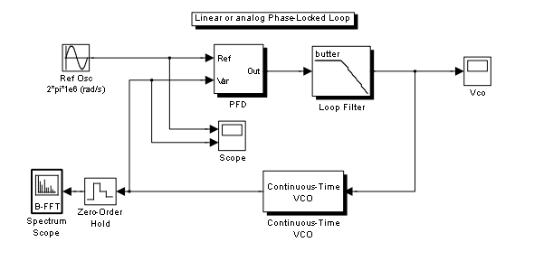In order to simulate the system, we need a test input and vizualiation. To achieve this, add a Sine wave block (Simulink Sources Library) and a Scope block (Simulink Sinks library) to the model. Set the parameters of the Sine wave to:
Sine Wave block; Frequency: 2*pi*1e6, All other parameters: default.
Add another axes to the Scope block, and connect the two inputs to the outputs of the Sine Wave block and the VCO block. Change the simulation time to 50 periods (50e-6). Connect a second Scope block to the output of the Butterworth filter. Label the block appropriately. Run the simulation!
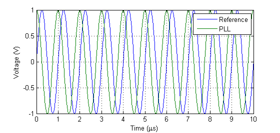To assess the quality of the PLL we are going to look at the spectrum of the generated signal. Add a Spectrum Scope block from the Signal Processing Sinks library and change it's parameters:
Spectrum Scope parameters; Buffer input: on, Buffer size: 512, Buffer overlap: 256, Window type: Kaiser, Beta: 5, Specify FFT length: off, Number of Spectral averages: 1.
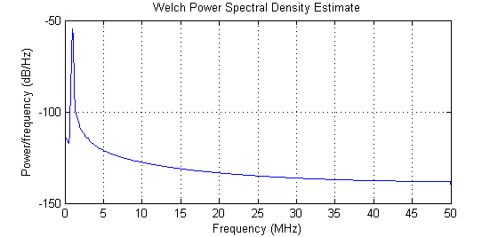To test how robust the PLL behaves to phase and frequency differences we can change the Frequency and Phase offset parameters of the Sine. For example, the PLL locks at frequencies up to about 1.05 MHz, but it fails to lock at 1.1 MHz. Also, for frequencies other then 1 MHz, the generated signal will have a phase offset with respect to the carrier (the reason being that the butterworth filter doesn't have a pole at zero (no pure integrator). Also note the ripple on the control signal, which is due to the second harmonics of the multiplication.
A charge-pump PLL with digital Phase-Frequency Detector in Simulink
Better results can be achieved with a charge pump and a loop filter. The charge pump, "pumps" current into a 2nd order loop filter. The branch voltage of the loop filter is used as input to the VCO. A digital phase frequency detector (PFD) determines whether a positive or negative current is pumped into the filter. Phase lead corresponds to a negative frequency (output and thus VCO frequency decreases) whereas phase lag corresponds to a positive current.
The PFD is typically a finite state machine that reponds to zero-crossings of the input signals. If the reference signal has a positive edge first a switch is turned on that pumps a positive current into the loop filter, until a positive edge of the VCO signal is detected (phase lag).
We'll start by creating a behavioral model of the PLL. To model the PFD we use a Stateflow machine. Create the chart according to the diagram below:
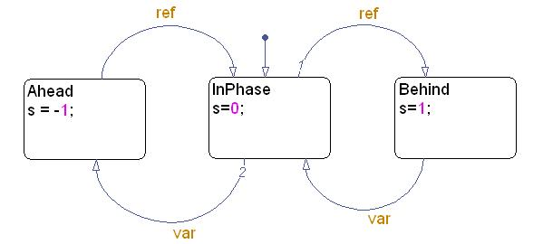
Update the diagram and create input events (Rising Edge) for Ref and Var and an output variable for s. To be able to feed the reference signal and VCO signal to the Chart, use a Mux block (Simulink routing library)
Implement the charge pump with a Gain block. Set the gain parameter to 260e-6 (Ampere). A behavioral model for the loop filter can be created with a simple Transfer Fcn block. To set the parameters of this block, we need to find the transfer function for the loop filter. Applying the Laplace transform to the differential equations yields:
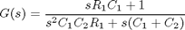
Set the Numerator coefficient of the Transfer Fcn block to [R1*C1, 1], and set the Denominator coefficient to [C1*C2*R1, (C1+C2), 0]. Next, adjust the loop gain by changing the Input Sensitivity of the VCO to 3e5. Change the Initial phase to -pi/2.
Assign values to variables C1, C2 and R1 in the MATLAB workspace:
C2 = 17e-12; C1 = 82e-12; R1 = 23e3;
Run the simulation with the Stateflow Chart open to see the animation.
Experiment with the Phase offset and Frequency of the Sine Wave block to test the PLL.
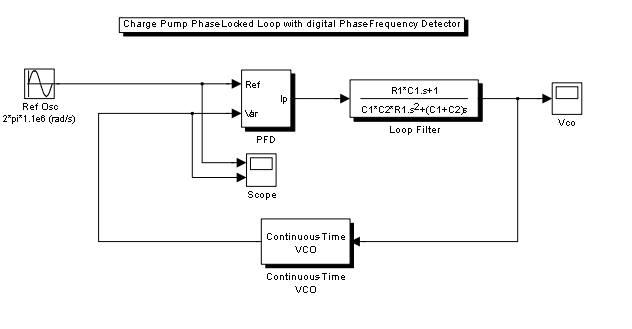An implementation for the PFD, Charge Pump and Loop filter
In the previous model we used behaviorable models for the PFD (state chart), charge pump (Gain) and loop filter (transfer function). Simulink also has the capabilities to simulate an physical implementation for these three components.
Open the model powerpll to see an example.
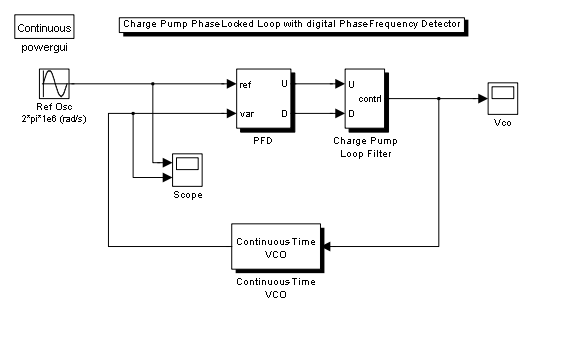 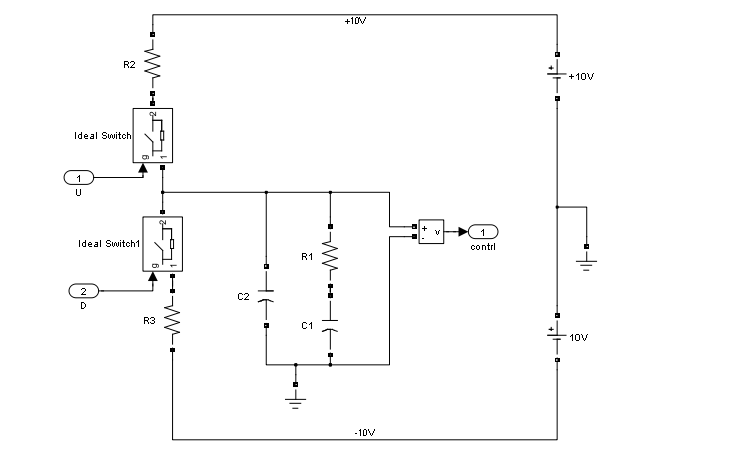 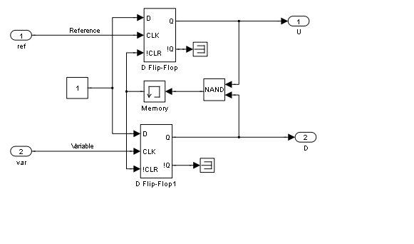In this example the phase frequency detector is implemented by two flipflops and a NAND gate. The charge pump and loop filter are implemented using blocks from the SimPowerSystem blockset. This extension to Simulink makes it possible to draw electrical circuits directly in Simulink. This eliminates the neccesity to derive differential equations and transfer functions and facilitates experimenting with different network topologies.
Run the simulation to validate the correct behavior of the PLL.
An all digital PLL in Simulink
PLLs are used more and more in the digital domain, this means that apart for the Phase Frequency Detector, also the loop filter and VCO need to be to be converted to discrete-time systems. The loop filter can be converted from Laplace to the z-domain using an appropriate transformation (e.g. Zero-Order Hold, Bilinear etc). The VCO (Voltage Controlled Oscillator) need to be replaced by an NCO (Numerically Controlled Oscilaator).
Open the model dpll to see an example.
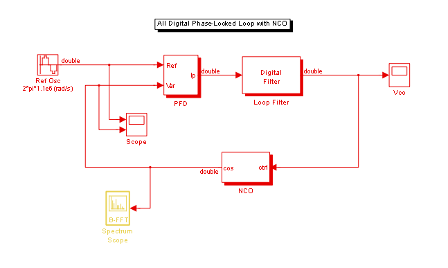The digital filter has been implemented using a Digital Filter block from the Signal Processing blockset's Filter Design library. The filter coefficients can be reproduced using the following code:
G = tf([0 R1*C1, 1],[C1*C2*R1, (C1+C2), 0])
Transfer function:
1.886e-006 s + 1
---------------------------
3.206e-017 s^2 + 9.9e-011 s
Gd = c2d(G,1e-8)
Transfer function: 580.8 z - 577.7 --------------------- z^2 - 1.97 z + 0.9696 Sampling time: 1e-008
a = Gd.den{1}
a =
1.0000 -1.9696 0.9696
b= Gd.num{1}/Gd.num{1}(2)
b =
0 1.0000 -0.9947
The VCO has been replaced by a subsystem containing a block that converts the output of the filter to an incremental value that loops through a look-up table of the NCO block. The constant increment value that is added corresponds to a frequency of approximately 1MHz. The unit delay block is used as a register that makes this system realizable in software (in Simulink it breaks the algebraic loop).
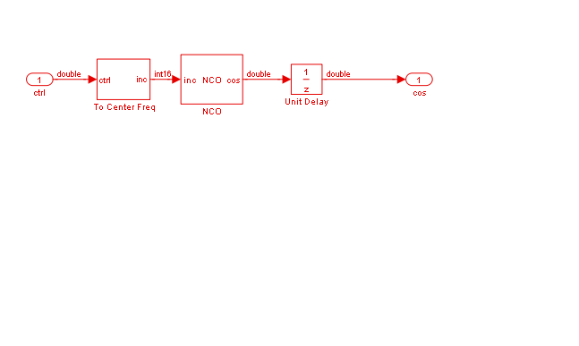This digital PLL can be automatically converted to floating-point ANSI C code using Real-Time Workshop.
Converting the digital PLl to fixed-point.
Many signal processing systems are implemented as hand-held devices (e.g. GPS, Mobile phones, multi-media) and need to be cost-effictive. Therefor, it is often necessary to convert the system's data-types to fixed-point in order to implement the algorithm on either a fixed-point DSP, an FPGA or an ASIC (Application Specific Integrated Circuit).
Fixed-pont data types however introduce a number of serious challenges in the design process:
- Finding optimal word lengths and fraction lengths
- Writing and understanding integer C-code is cumbersome and error prone
- Integer C code is hard to debug, pinpointing errors is difficult
- Translating (sequential) C to (parallel) HDL is a challenge
Simulink avoid these challenges by: 1. Seperating the data-types from the algoritms 2. Seperating the data-types from the value
Simulink achieves this by providing the following capabilities:
- Simulink can display the datatype in the block diagram
- The same blocks that operate on floating-point data also operate on fixed-point data. Therefor it's easy to switch.
- Simulink can log the range of the model's signals, together with overflows (if any).
- Simulink can suggest and apply fraction lengths, based on the ranges of a reference simulation.
We'll use the all digital PLL to show how to convert a floating-point Simulink model to fixed-point, using the capabilities mentioned above.
First, turn on data-type labeling to show the data-types of all the signals in the model: Format menu -> Port/Signal Displays -> Port Data Types.
All label read "double" which is a 8 byte floating point data type.
To convert the model, we'll change the datatype of the NCO (we're actually changing the data type of the entries in the look-up table). Open the NCO subsystem and the NCO block's parameter dialog window. Select the second tab to change the block's data types.
Set the output data type to Binary point scaling with a Word length of 16 bits and a fraction length of 14 bits.
Use a data-type conversion block to set the datatype of the reference signal to "Inherit via back propagation".
Update the diagram. Note that the output of the NCO and the Data type conversion block have changed to sfix16_n14. This data type has a range of [-2 2>.
To change the output of the Stateflow block, open the Model Explorer from Stateflow (View menu -> Model Explorer). Next, select the s data object in the middle pane, and change it's data type to a 16 bit signed fixed-point number with 14 bits scaling.
Update the diagram, note that the complete model is now fixed-point. Note that we didn't have to make any changes to the algorithm itself, or replace any of the blocks in the model.
Running the model shows that the PLL doesn't behave correctly.
Optimizing fixed-point data types
To solve the problem, let's use the fixed-point tooling available in Simulink fixed-point.
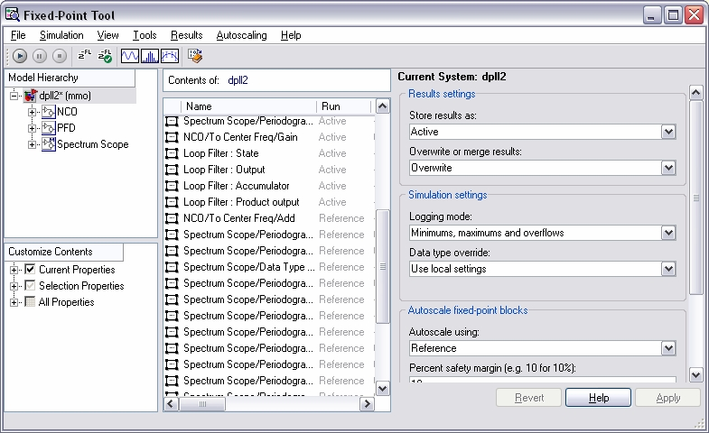
1. To verify that fixed-point data types indeed are the cause for the incorrect behavior, run a reference simulation with Data type override set to "True doubles". Note that the data types in the model changed to "double" again, and that the PLL behaves again correctly!
2. Run the reference simulation again, but now with Logging mode set to Minimum, maximums and overflows. Note the logging of the ranges (no overflows due to floating-point data types)
3. Run an active simulation again, but with Data type override set to "Use local settings". Note the overflows in the Loop Filter block (Accumulator and Product output).
4. Use the autoscaling capabilities of the Fixed-Point Tool to optimize the fraction length of the filter's internal variables.
- Open the Fixed-point tab of the Loop filter block's parameter dialog window.
- Change the Rounding Mode to Nearest
- Change the data type mode of all the internal variables to Binary point scaling. Use a 32 bit word length for the Product output and Accumulator and a 16 bit word length for the State and Ouptut.
- In the Fixed-Point Tool select Auto-scaling using Reference and set a 10 Percent safety margin Propose and accept the new fraction lengths using the two buttons at the bottom of the Dialog View of the Fixed-Point Tool
Warning: Parameter precision loss occurred for ''Numerator coefficients''. The parameter's value cannot be represented exactly using the run-time data type. A small quantization error has occurred. You can control this diagnostic on the Diagnostics pane of the Configuration Parameters dialog. This originated from 'dpll_fixpt/Loop Filter'. Warning: Parameter precision loss occurred for ''Denominator coefficients''. The parameter's value cannot be represented exactly using the run-time data type. A small quantization error has occurred. You can control this diagnostic on the Diagnostics pane of the Configuration Parameters dialog. This originated from 'dpll_fixpt/Loop Filter'. Warning: Parameter precision loss occurred for ''Numerator coefficients''. The parameter's value cannot be represented exactly using the run-time data type. A small quantization error has occurred. You can control this diagnostic on the Diagnostics pane of the Configuration Parameters dialog. This originated from 'dpll_fixpt/Loop Filter'. Warning: Parameter precision loss occurred for ''Denominator coefficients''. The parameter's value cannot be represented exactly using the run-time data type. A small quantization error has occurred. You can control this diagnostic on the Diagnostics pane of the Configuration Parameters dialog. This originated from 'dpll_fixpt/Loop Filter'. Warning: Overflow occurred. This originated from 'dpll_fixpt/NCO/NCO'.

Run the simulation again to see that the overflows have dissapeared and that the fixed-point PLL runs as expected!
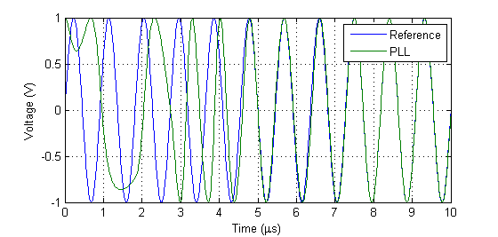Note that the PLL locks to the 1.1 MHz input frequency after about 10 mu.
Software and Hardware code generation
This concludes the demo. A next step would be to generate VHDL, Verilog or ANSI C code from the model.
Toolboxes and blocksets needed for this demo
- Linear PLL (linearpll.mdl): MATLAB, Simulink, Signal Processing Toolbox, Signal Processing Blockset, Communications Toolbox, Communications Blockset.
- Charge Pump PLL (cppll.mdl): MATLAB, Simulink, Signal Processing Toolbox, Signal Processing Blockset, Communications Toolbox, Communications Blockset, Stateflow
- PLL with circuit model (powerpll.mdl): MATLAB, Simulink, Signal Processing Toolbox, Signal Processing Blockset, Communications Toolbox, Communications Blockset, SimPowerSystems
- All Digital PLL: MATLAB, Simulink, Signal Processing Toolbox, Signal Processing Blockset, Stateflow.
- Fixed-Point PLL: MATLAB, Simulink, Signal Processing Toolbox, Signal Processing Blockset, Stateflow, Fixed-Point Toolbox, Simulink Fixed-Point.